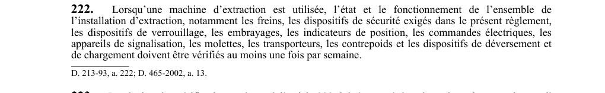

art-222-RSSM : vérification hebdomadaire installation extraction
Un article du wiki ⚖️ Recueil législatif
En bref
Lorsqu'une machine d'extraction est utilisée, l'état et le fonctionnement de l'ensemble de l'installation d'extraction : incluant les freins, dispositifs de sécurité, verrouillages, embrayages. Cette obligation vise l'employeur.
- Molettes, transporteurs.
- Fréquence : au moins 1 fois par semaine.
- Éléments visés : freins, dispositifs de sécurité, verrouillages, embrayages, indicateurs de position.
🌐 LegisQuébec · 📄 PDF officiel
Texte officiel : capture du PDF

Toucher l'image pour l'agrandir🔗 Voir art. 222 RSSM dans le PDF (page 67)
Version : texte officiel du RSSM (RLRQ c. S-2.1, r. 14), à jour au 1er mai 2024 — Éditeur officiel du Québec
Voir aussi
- art. 220 : dispositifs verrouillage boulons installation extraction · obligation : les boulons et éléments de l'installation d'extraction dont le desserrage constitue un danger doivent être retenus en place au moyen de dispositifs de verrouillage tels que des goupilles, des écrous autobloquants ou des contre-écrous.
- art. 221 : vérification registres avant extraction personnes · obligation : avant d'utiliser pour la première fois une machine d'extraction ou une machine modifiée pour le transport de personnes, les registres prévus aux articles 344, 345, 347 et 397 ainsi que les essais et examens des dispositifs de sécurité prévus aux articles 222, 302.
- art. 223 : inscription registre vérifications extraction · obligation : le résultat des vérifications prévues à l'article 222 doit être noté dans le registre du poste de travail concernant les appareils servant à l'extraction, prévu à l'article 344.
- art. 224 : vérification avant reprise machine inutilisée · obligation : si une machine d'extraction n'est pas utilisée au cours d'une semaine, les vérifications prévues à l'article 222 doivent être effectuées avant de l'utiliser pour le transport des travailleurs.
- ⚖️ Loi habilitante : LSST
- ↑ Index du bloc : Engins miniers
Pages qui pointent ici (5)
- art-220-RSSM : dispositifs verrouillage boulons installation extraction Recueil législatif
- art-221-RSSM : vérification registres avant extraction personnes Recueil législatif
- art-223-RSSM : inscription registre vérifications extraction Recueil législatif
- art-224-RSSM : vérification avant reprise machine inutilisée Recueil législatif
- RSSM : Engins miniers (art. 201 à 250) Recueil législatif